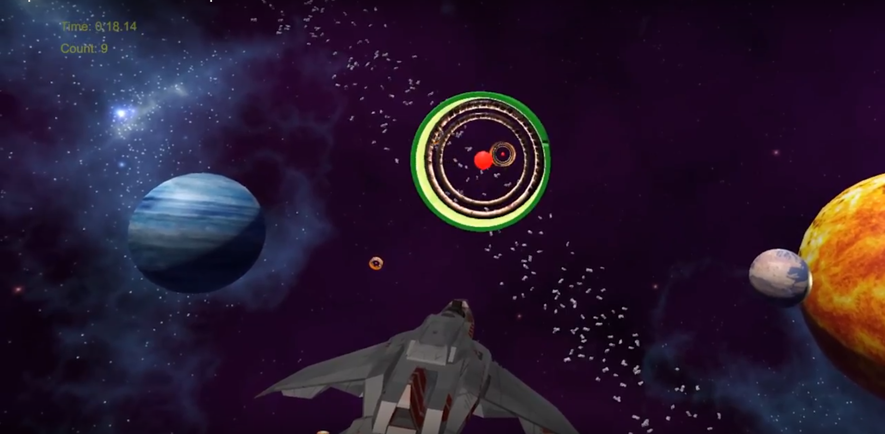
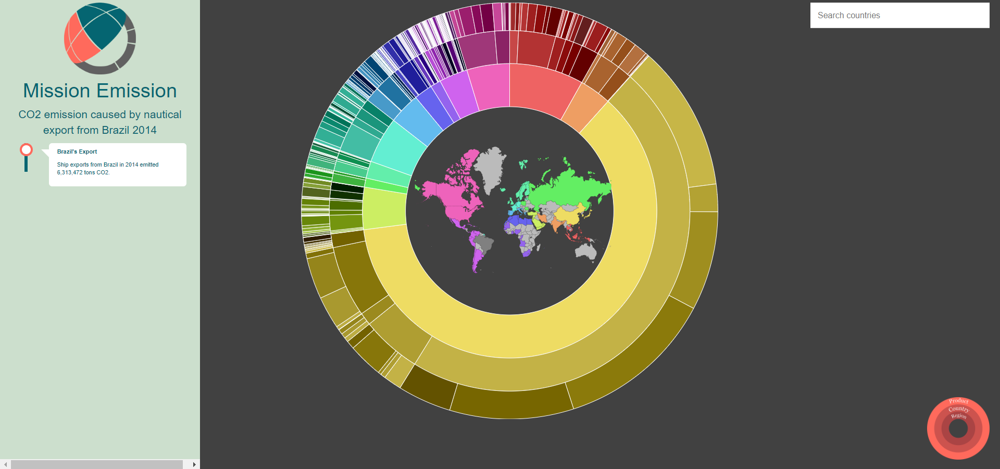
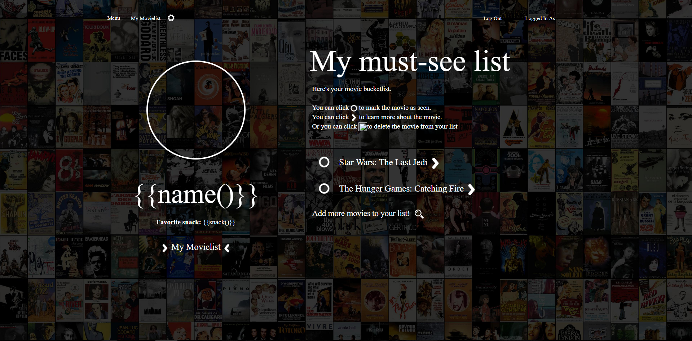

Welcome to my portfolio!
Petra Olsson - Mediatechnology student
About me
I'm a M.Sc. student at KTH currently on my fourth year at the Media Technology program, and proceeding with my master in Interactive media technology with Visual Media as an individual track. I've grown interest in the UX and front-end developing section through my years at KTH. You can here in my portfolio see some of the projects I've done in the latter years of my studies.
My Projects
Spotify Groups

Multimodal

Mission Emission
